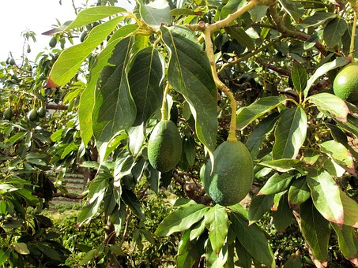
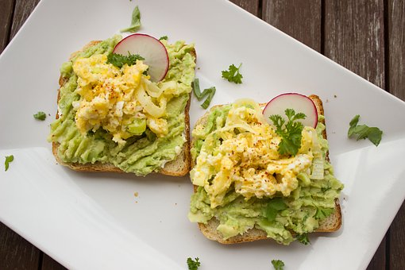
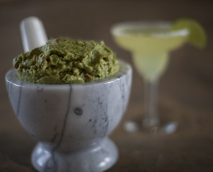

WHERE DO THEY COME FROM?
How to grow your own avocado tree:
- Remove the large pit (seed) from inside an avocado, rinse well, and dry;
- Push three or four toothpicks into the seed at its widest part so that you can suspend the pit over a glass of water with the pointy end sticking up. The water should cover about an inch of the seed;
- Put in a warm place and make sure to maintain the water level;
- In 2-6 weeks, roots and a stem will sprout from the seed. When the stem is about six inches long, trim it in half;
- When the stem leafs again, transplant the seedling to a pot with loose, sandy soil. Plant the seedling root down, leaving the top half of the pit sticking out of the soil;
- Give your plant frequent, light watering and keep it in a sunny place to encourage growth;
- Pinch back the newest top leaves every time the stems grow another six inches or so to encourage more growth and a fuller plant.
WHAT'S THE BEST WAY TO EAT IT?
Avocado Toast:
As one of the most popular items on a Brunch menu, this open face sandwich is made with mashed avocado and salt, pepper, and citric juice on toast. Many other ingredients may be used, such as poached eggs, salmon, strawberries, and cheese.
HAPPY HOUR, ANYONE?
Guacamole + Margarita = the perfect pairing!